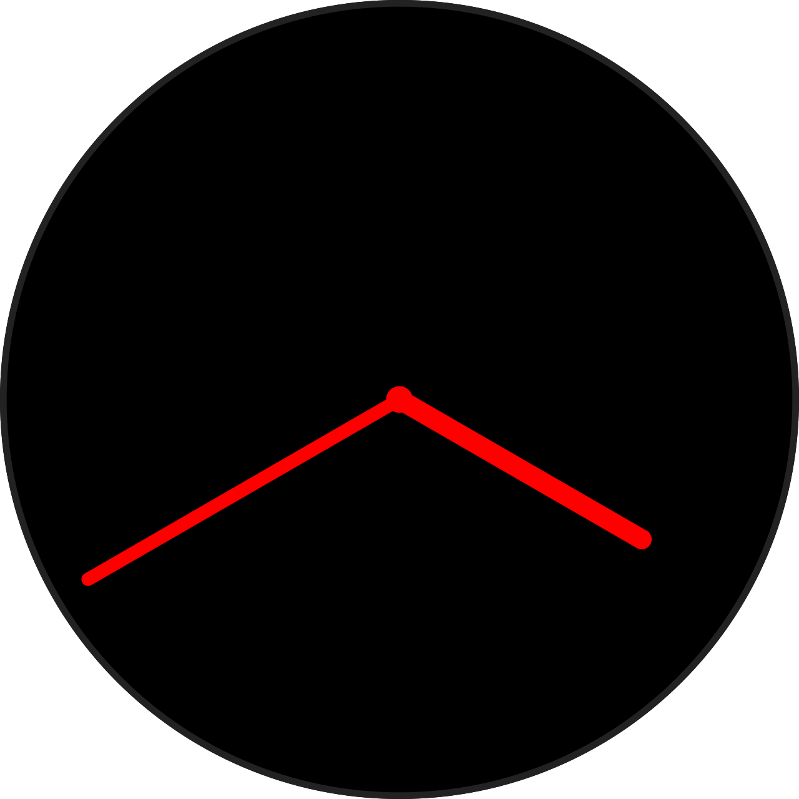
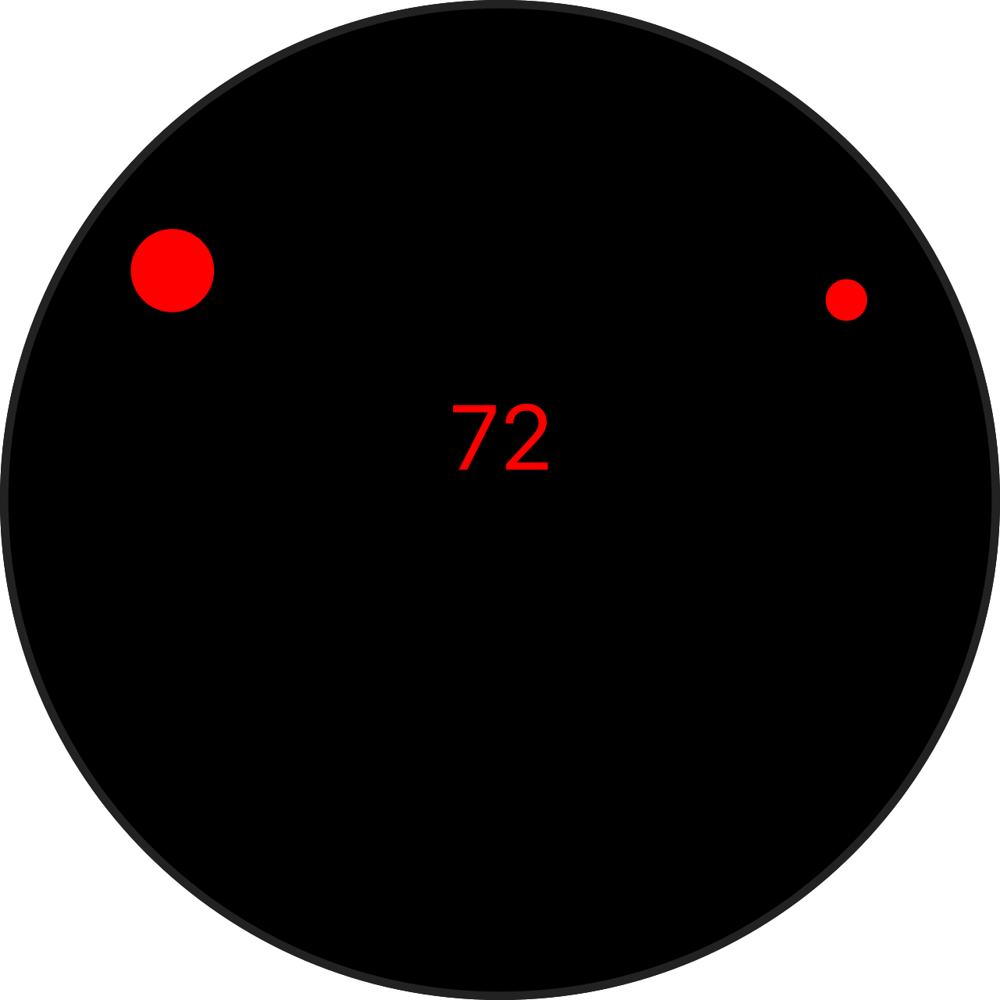
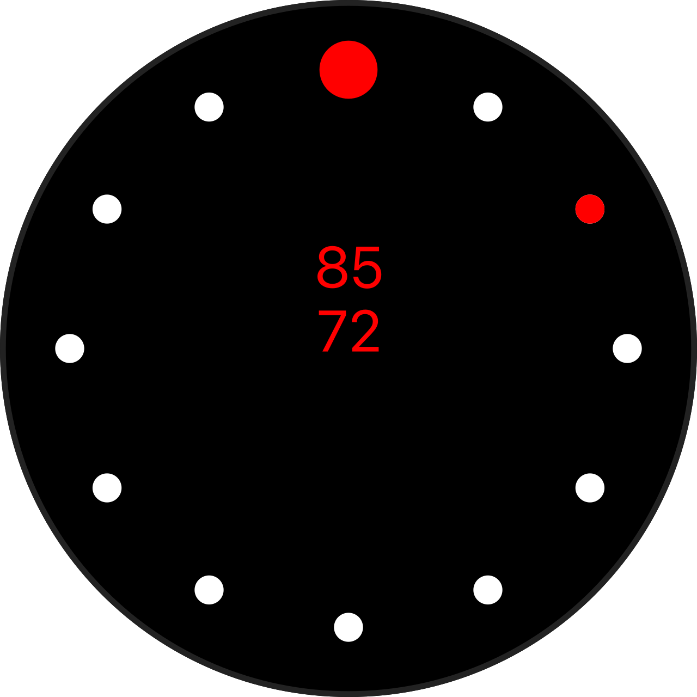
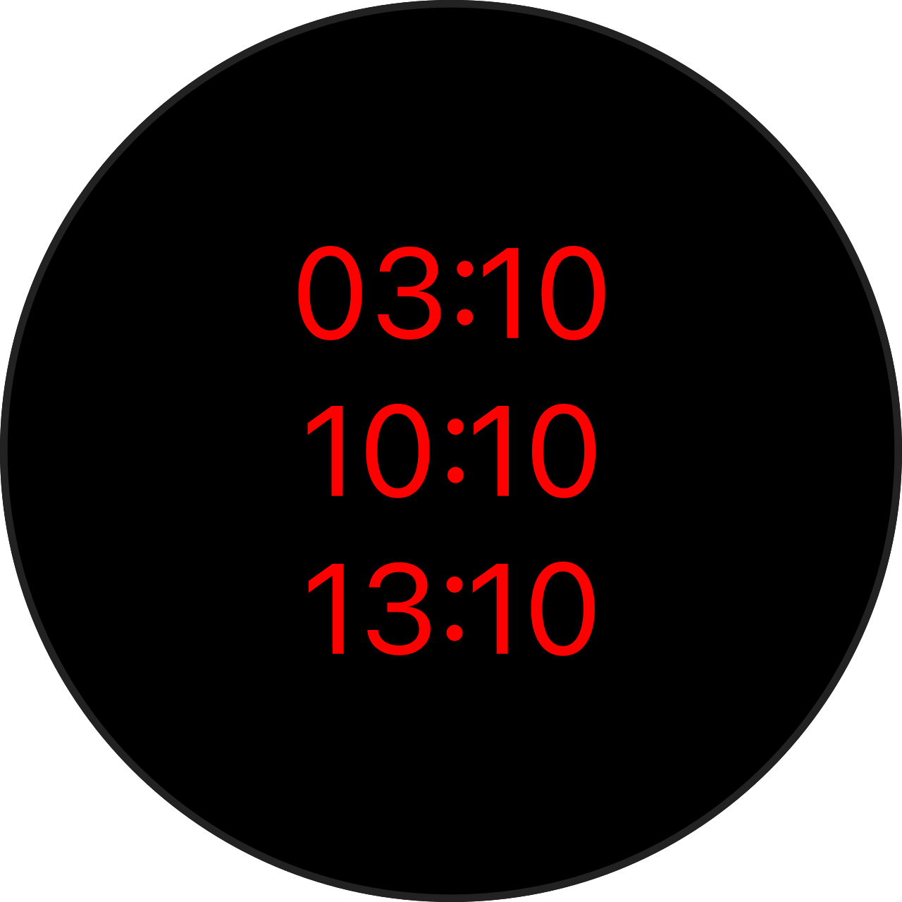

Language support
Highlighting and editor configuration for
.mc, .mb, .mcgen, and
.jungle files.
Forerunner 55 · Garmin Connect IQ
Syntax highlighting, document formatting, a dark theme, file
icons, and local SDK simulator preview for .mc and
.jungle — in VS Code and Zed.
code --install-extension monkey-c.vsix




Highlighting and editor configuration for
.mc, .mb, .mcgen, and
.jungle files.
Built-in document formatter for Monkey C and Jungle, plus a dark color theme and file icons.
Builds the nearest Connect IQ package with your local SDK and developer key, then launches it in the simulator.
Packaged as a .vsix from the rolling
latest release. Install with the VS Code CLI or
the Extensions view.
code --install-extension monkey-c.vsix
Loaded as a dev extension from source: Tree-sitter highlighting, external formatter, runtime-preview tasks, and the Monkey C theme and icons.
Zed extensions load from source — there is no
.vsix to download.
packages/extensions/zed from this repository.packages/extensions/zed/grammars/tree-sitter-jungle
is committed and pushed to master — Zed fetches
grammars by Git revision.
cd packages/extensions/zed
./scripts/install.sh
This symlinks monkey-c-format and
monkey-c-preview into ~/.local/bin (or
$MONKEYC_BIN_DIR) so Zed's formatter and tasks can
find them.
{
"languages": {
"Monkey C": {
"formatter": {
"external": {
"command": "monkey-c-format",
"arguments": ["--lang", "monkeyc"]
}
},
"format_on_save": "on"
},
"Jungle": {
"formatter": {
"external": {
"command": "monkey-c-format",
"arguments": ["--lang", "jungle"]
}
},
"format_on_save": "on"
}
}
}Open task: spawn (cmd-shift-p) → choose Monkey C: Runtime Preview or Monkey C: Build PRG.
Rolling latest release built from this repository —
the VS Code extension package.